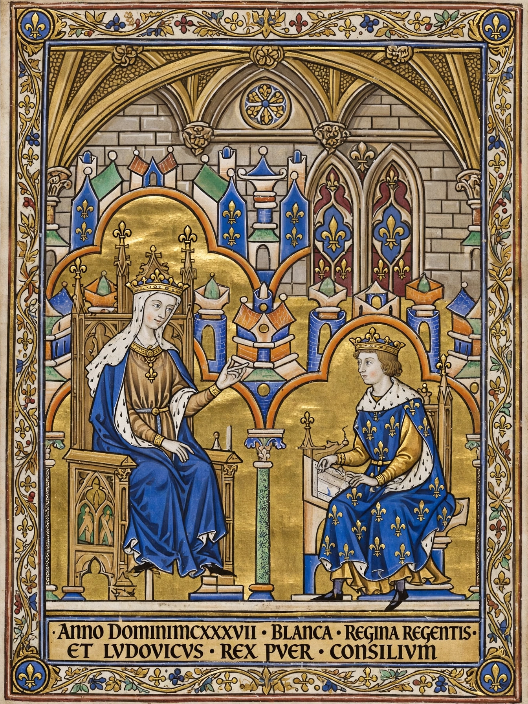

From Wikipedia, the free encyclopedia
| Blanche of Castile | |
|---|---|
 Blanche with her son Louis IX | |
| Queen consort of France | 1223–1226 |
| Regent of France | 1226–1234; 1248–1252 |
| Born | 4 March 1188, Palencia, Castile |
| Died | 27 November 1252 (aged 64), Paris, France |
| Spouse | Louis VIII of France |
| Issue | Louis IX of France; Robert I, Count of Artois; Charles I of Anjou |
| House | Castilian House of Ivrea |
| Father | Alfonso VIII of Castile |
| Mother | Eleanor of England |
Blanche of Castile (Spanish: Blanca de Castilla; 4 March 1188 – 27 November 1252) was Queen of France by marriage to Louis VIII and served twice as regent of the kingdom — during the minority of her son Louis IX (Saint Louis) from 1226 to 1234, and again during his absence on the Seventh Crusade from 1248 until her death. She is regarded as one of the most capable rulers of medieval Europe, preserving the French crown through baronial revolts, war with England, and the Albigensian settlement.
A granddaughter of Eleanor of Aquitaine, Blanche was chosen by her grandmother to marry the French heir under the Treaty of Le Goulet (1200), in preference to her elder sister Urraca. She married Louis in 1200 and became queen consort when he succeeded Philip II in 1223. Louis VIII died in 1226, leaving the twelve-year-old Louis IX as king.
As regent, Blanche faced down a coalition of great barons — including Peter of Dreux and Theobald of Champagne — who sought to exploit the royal minority, combining military campaigns with diplomacy to detach rebels one by one. She concluded the Treaty of Paris (1229), ending the Albigensian Crusade and bringing much of Languedoc under Capetian influence. She carefully supervised her son's education, and her firm rule consolidated the monarchy that Louis IX would inherit. During her second regency she suppressed the Pastoureaux uprising of 1251 and governed until her death in Paris in November 1252; Louis, still abroad, learned of it months later.
Blanche was a notable patron of Gothic art and architecture, associated with the Sainte-Chapelle project, the abbey of Maubuisson (where she was buried), and lavish illuminated manuscripts such as the Morgan Bible.